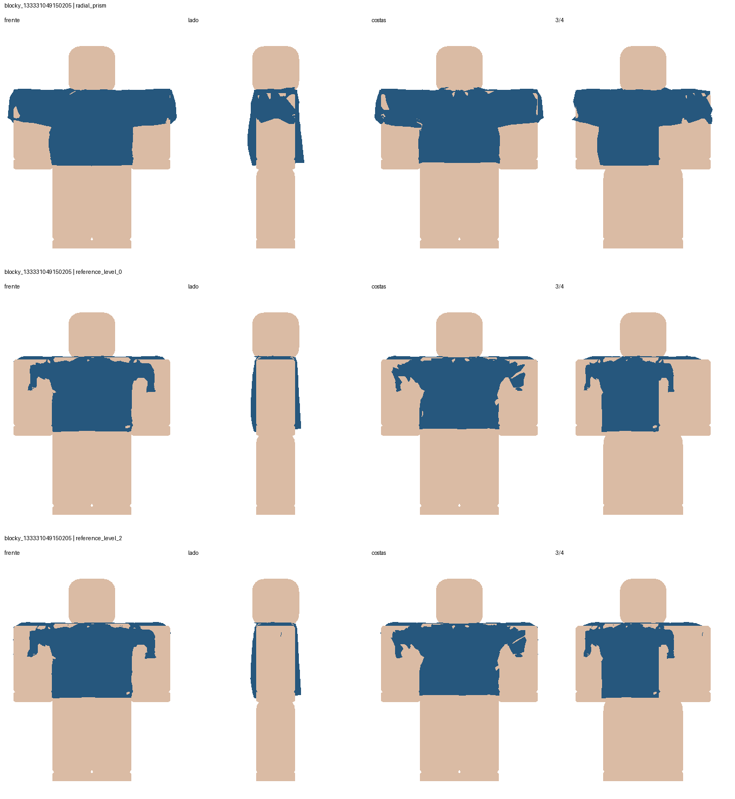
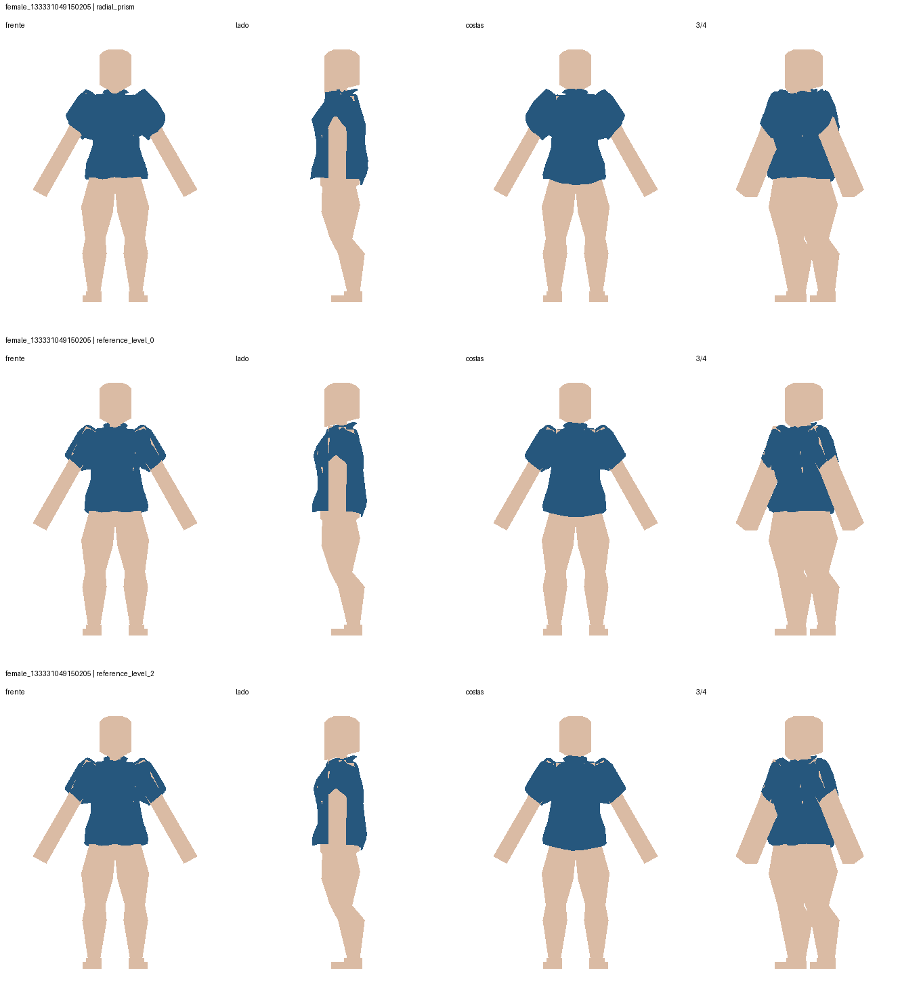
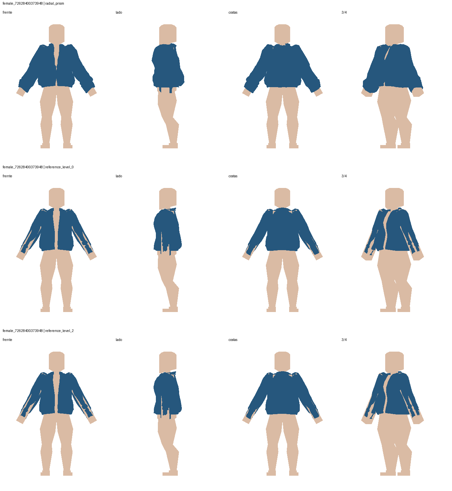
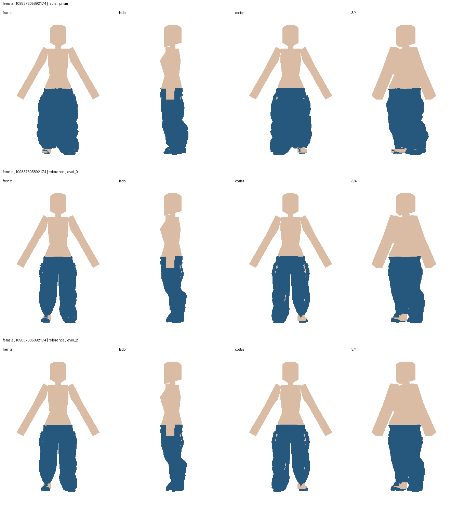
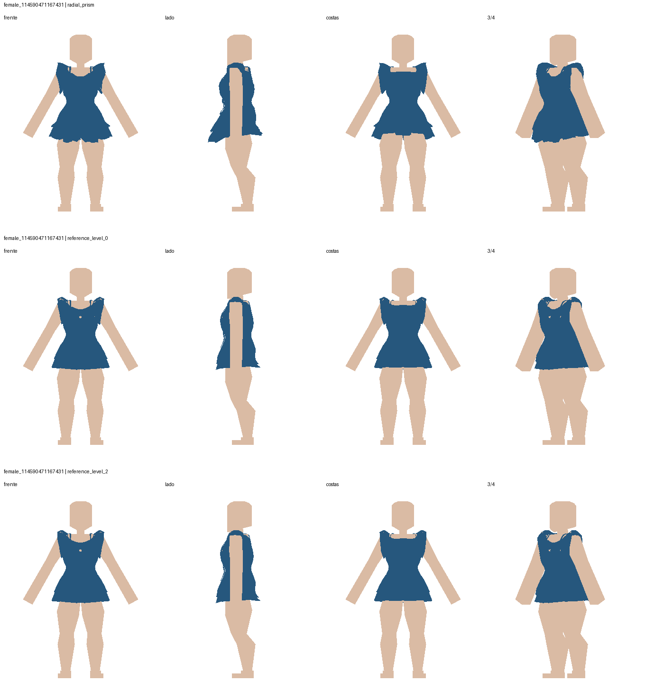
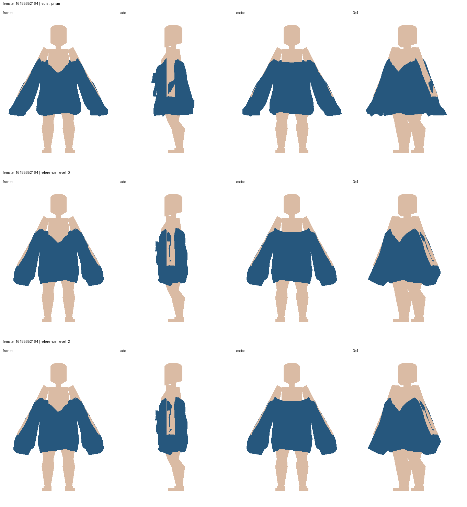

Em cada imagem: radial anterior, campo sem refinamento, campo com duas subdivisões. Quatro vistas com a mesma escala entre variantes. Azul: roupa. Bege: corpo. Melhoras de suavidade coexistem com aumento de penetração. Produção preservada.
Relatório e reprodução · Fidelidade aos controles da cage





